3D重建
介绍3D重建的各种模型框架方法等。
3D数据常用的表示方法：
- Rasterized forms例如voxels and multi-view RGB(D) images.
- Geometric forms例如point clouds, polygon meshes, and sets of primitives
- 其他：geometry images、depth images、classification boundaries、signed distance function
3D-R2N2
ECCV2016《3D-R2N2: A Unified Approach for Single and Multi-view 3D Object Reconstruction》
paper下载：https://arxiv.org/abs/1604.00449
概述
提出3D-R2N2网络，能够输入一张/多张图片并重建出3D occupancy grid，该方法在训练/测试阶段不需要任何的图像标注和物体类别标签（但需要bounding box）。在某些情形中使用传统SFM/SLAM方法失效而本方法却能够重建出来（因为这些情形缺少纹理，或者摄像机的拍摄视角变化大）。3D-R2N2是自动学习的、end-to-end的。性能超越了SOTA。
创新点：使用RNN来实现允许单图片/多图片的输入
注：
- 3D-R2N2 == 3D Recurrent Reconstruction Neural Network
先前方法的要求条件（因为SFM/SLAM这类方法假设了features can be matched across views）：
观察的视角密集，即相机的位置变化比较小
表面是Lambertian reflectance，即均匀的漫反射
表面的纹理丰富，不单一
- 所使用的数据集：ShapeNet、PASCAL 3D、Online Products、MVS CAD Models
- 所对比的模型：Kar et al.（《Category-Specific Object Reconstruction from a Single Image》）、Multi View Stereo method（MVS）
原理
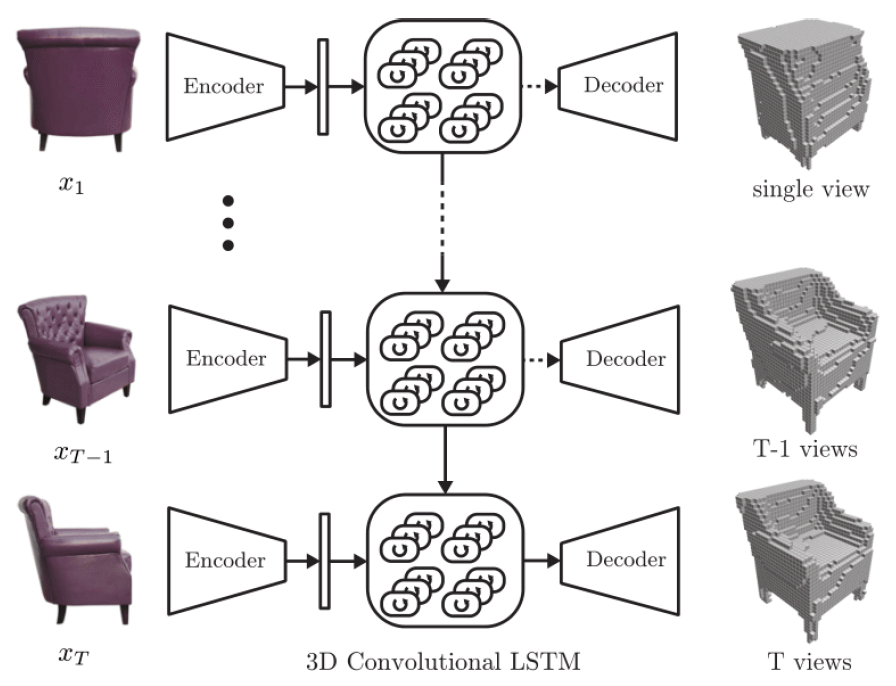
利用RNN的“可接受任意长的序列输入”的性质，来达到单视图/多视图输入的统一。
首先将图片利用2D conv编码成1024维的特征向量。然后丢到3D Convolutional LSTM中，输出是$4\times 4\times 4$大小的voxels（4D tensor），每个voxel位置上都是一个vector（其实是排列成$4\times 4\times 4$的64个LSTM单元，然后取hidden state作为每个voxel的特征向量）。然后将4D tensor丢到3D conv中上采样，得到$32\times 32\times 32$的3D occupancy grid（每个voxel位置上是这个voxel取到的概率，所以需要一个threshold来确定最终的输出）。
随着输入图片变多，得到的结果也逐渐变得精细。
视觉上解释LSTM带来的优点：LSTM的遗忘门/输入门机制对应于自动纠错错误重建的部分/自动重建未看见的部分（有效的处理物体遮挡问题）
实现
分为三部分：2D Convolutional Neural Network (2D-CNN), a novel architecture named 3D Convolutional LSTM (3D-LSTM), and a 3D Deconvolutional Neural Network (3D-DCNN)
Encoder: 2D-CNN
可以使用普通的浅CNN（上面那个），或者是使用残差结构的深CNN（下面那个）。实验表明残差结构更好。
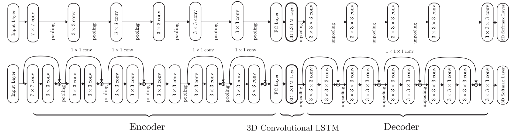
Recurrence: 3D Convolutional LSTM
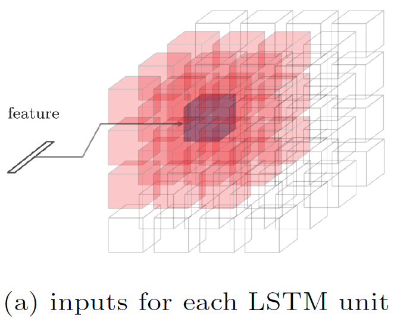
在实施例中，有64个不同的LSTM单元，排列成$4\times 4\times 4$的形状。经过某种计算之后，我们取每个LSTM单元的$N_h$维的hidden state作为输出，于是得到$4\times 4\times 4 \times N_h$的4D tensor输出。计算过程如下：
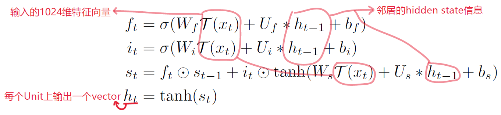
其中$f_t$是遗忘门，$i_t$是输入门，$s_t$是memory cell，$h_t$是hidden state。
先考虑在一个位置上的计算：$U*h_{t-1}$表示周围邻居（红色）的$t-1$时刻的hidden state的线性加权和$\sum_{k \in \mathcal{N}_{index}} u_k h_{t-1}[k]$，$\mathcal{T(x_t)}$表示$t$时刻的1024维向量输入。那么输出$h_t$就是一个向量。
如果考虑全部64个LSTM单元，那么输出$h_t$就是一个4D tensor。
作者在这里没有使用outputs gate，节省了参数量。这里的kernel size是3。
当然也有基于GRU（Gated Recurrent Unit）的实现方法，实验表明GRU效果好于LSTM，kernel size为3时好于为1时。
Decoder: 3D Deconvolutional Neural Network
可以用普通的3D卷积，也可以用残差结构的3D卷积。
最后将$32\times 32\times\times 32 \times 2$的输出套用softmax，得到voxel-wise的概率值（尺寸$32\times 32\times \times 32$）。然后用threshold截断概率便得到最后的结果。
损失函数是the sum of voxel-wise cross-entropy
训练和效果
- Data augmentation： augmented the input images with random crops、tinted the color、randomly translated the images、all viewpoints were sampled randomly
- Training： variable length inputs ranging from one image to an arbitrary number of images
- Metrics： voxel Intersection-over-Union (IoU)、cross-entropy loss
PointOutNet
CVPR2017《A Point Set Generation Network for 3D Object Reconstruction from a Single Image》
paper下载：http://openaccess.thecvf.com/content_cvpr_2017/html/Fan_A_Point_Set_CVPR_2017_paper.html
概述
作者是第一个用深度学习重建点云的人。输入单张图片，输出点云的3D坐标。他们构造的模型是“conditional shape sampler”（即有个输入变量$r$可以控制生成的多样性，用于描述重建的不确定性），可以输出多种可能的点云（取决于$r$）。单图输入的情况下性能超越SOTA（与3D-R2N2对比）。也可以用于3D补全，以及多可能的输出。
似乎没深究如何生成点云以达到无序性输出，文中好像是在fc/conv这样的结构化排列中输出的？
难点：
- 如何输出点云
- 仅靠输入的单张图片难以直接确定3D形状（即inherent ambiguity in groundtruth）
特点：
- 引入随机变量$r$可以从输入操控生成点云的多样性
作者的Discussion：
- First, how to generate an orderless set of entities. Towards building generative models for more sophisticated combinatorial data structures such as graphs, knowing how to generate a set may be a good starting point.
- Second, how to capture the ambiguity of the groundtruth in a regression problem. Other than 3D reconstruction, many regression problems may have such inherent ambiguity. Our construction of the MoN loss by wrapping existing loss functions may be generalizable to these problems.
TODO IDEA：能否不使用“Distance Metric between Point Sets”，转而使用能直接处理点云的网络？能否定向操控$r$各个分量所对应的3D属性？
实现
主要由三部分组成：architecture, loss function and learning paradigm
注：architecture的作用是根据图片和随机向量$r$来生成点云；loss function的作用是度量点云相似度；learning paradigm作用是使得随机变量$r$能在网络中起作用，相当于在loss function外部包上了一层“MoN函数”。
Architecture - Point Set Prediction Network（此网络简记作$\mathbb{G}$）
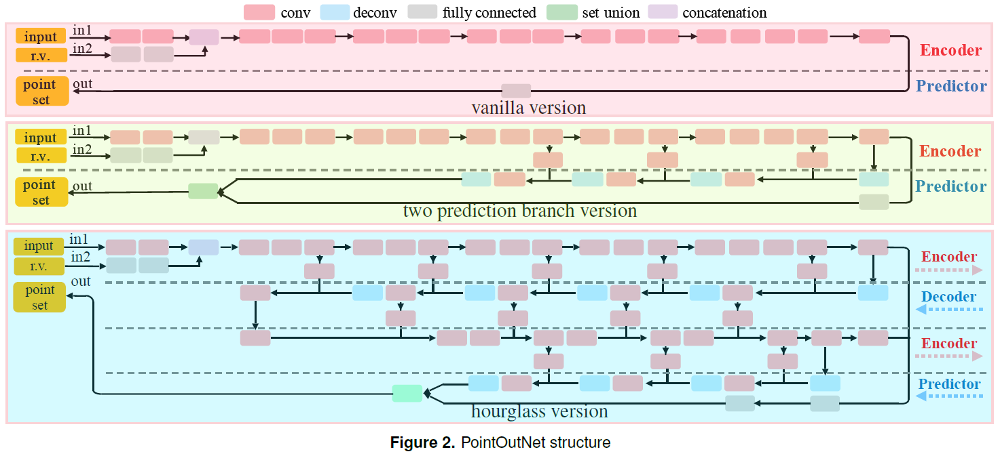
作者设计了3种网络的结构：vanilla version、two prediction branch version和hourglass version
每种网络都有encoder stage和predictor stage。encoder stage用于将图片$I$和输入的随机向量$r$映射到embedding space；而predictor则输出一个$N \times 3$大小的矩阵$M$（$N$是重建出的点云的点数）。A random vector $r$ is subsumed so that it perturbs the prediction from the image $I$（随机向量$r$的用法在“Generation of Multiple Plausible Shapes”会讲到）
- vanilla version：最原始的版本，细节见图（r.v.就是随机向量$r$）。Though simple, this version works reasonably well in practice.
- two prediction branch version：目的是better accommodate large and smooth surfaces which are common in natural objects。它的predictor有两个并行的分支：a fully-connected (fc) branch and a deconvolution (deconv) branch。fc branch预测$N_1=256$个点（fc输出256*3个nodes），deconv branch预测输出$H \times W=24\times 32$个点（排列成$24\times 32$然后一个像素对应一个3D的点，是3通道的）。那么总共输出$N = 24 \times 32 + 256=1024$个点（不知道如何处理无序性呢？？）。Their predictions are later merged together to form the whole set of points in $M$. Multiple skip links are added to boost information flow across encoder and predictor。fc branch功能：high flexibility、可describe intricate structures。deconvolution branch功能：节省参数、more friendly to large smooth surfaces, due to the spatial continuity induced by deconv and conv。
- hourglass version：This deep network conducts the encoding-decoding operations recurrently, thus has stronger representation power and can mix global and local information better.
Loss function - Distance Metric between Point Sets
对Loss的要求：可微、高效计算、对异常点鲁棒
那么需要找到一种衡量两个点云$S_i^{pred}$和$S_i^{gt}$相似度的距离函数$d(S_i^{pred}，S_i^{gt})$，那么损失函数就是$L = \sum_i d(S_i^{pred}，S_i^{gt})$（其中$i$是training samples的index。这个损失函数还不是最终的损失函数，不能实际应用）
作者建议使用Chamfer distance（CD）或Earth Mover’s distance（EMD）
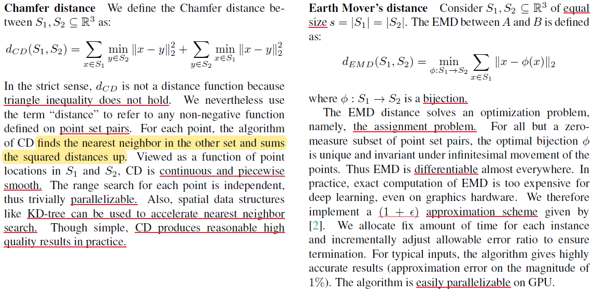
Facing the inherent inability to resolve the shape precisely, neural networks tend to predict a “mean” shape averaging out the space of uncertainty. The mean shape carries the characteristics of the distance itself.
Learning paradigm - Generation of Multiple Plausible Shapes
The ambiguity of groundtruth shape may significantly affect the trained predictor, as the loss function induces our model to predict the mean of possible shapes. So We expect that the random
variable $r$ passed to “Point Set Prediction Network” would help it explore the groundtruth distribution. 如果跳过这步不做的话，就会导致the loss minimization will nullify the randomness.我们可以使用最小化下面的损失函数（称作Min-of-N loss （MoN））的方法来解决：
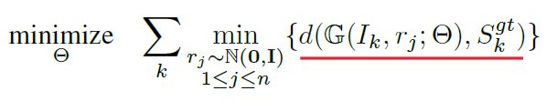
意思是尝试$n $个random variable的取值，然后取最小距离作为距离值。（$n=2$足矣）
另一种方法是使用Conditional VAE（这样好像$\mathbb{G}$里就不用$r$了），详情略。
似乎也能用Conditional GAN，但是作者没深究。
实验
用ShapeNet dataset，从CAD模型中渲染出图片来
3D Shape Reconstruction from RGB Images
与3D-R2N2作比较。将3D-R2N2输出的体数据用最远点采样获得点数据，然后计算CD、EMD值；将本模型输出的点数据经过后期处理得到体数据，然后计算IoU值。
实验表明本方法在单张图片输入时，在所有种类上精度远超3D-R2N2。同时大部分种类的精度远超5张图片输入的3D-R2N2。而且本方法不存在“薄弱细小结构”不能重建的缺点。
3D Shape Completion from RGBD Images
当是RGBD输入时，还可以起到3D补全的作用。
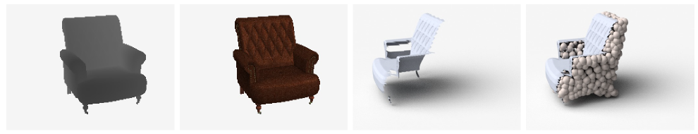
Predicting Multiple Plausible Shapes
改变$r$值可以产生多种输出。
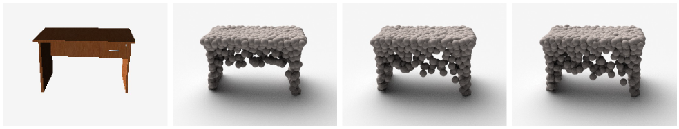
Network Design Analysis
Effect of combining deconv and fc branches for reconstruction
deconv的引入提升了精度；Stacking another hourglass level也提升了精度
In the deconv branch the network learns to use the convolution structure to constructs a 2D surface that warps around the object. In the fully connected branch the output is less organized as the channels are not ordered.
The deconv branch is in general good at capturing the “main body” of the object, while the fully connected branch complements the shape with more detailed components
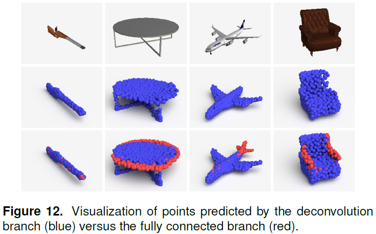
Analysis of distance metrics
The network trained by CD tends to scatter a few points in its uncertain area (e.g. behind the door) but is able to better preserve the detailed shape of the grip. In contrast, the network trained by EMD produces more compact results but sometimes overly shrinks local structures. This is in line with experiment on synthetic data.
More results and application to real world data
也能用于现实生活中照片的3D重建，但需要从背景分割出物体来
Analysis of human ability for single view 3D reconstruction
某些图片上超越人类
Analysis of failure cases
仅仅是主观分析，略
OGN 👍
ICCV2017《Octree Generating Networks: Efficient Convolutional Architectures for High-resolution 3D Outputs》
概述
使用八叉树（octree）的表示法，生成高分辨率的3D体素数据。本文中的OGN是deep convolutional decoder（即3D体素生成器）。近似平方的复杂度（而不是立方复杂度），大大节省了内存和计算量消耗。低分辨率时与普通的voxel方法精度差不多，而且它还能生成高分辨率体素，甚至可以生成$512^3$这么大的分辨率。可以用在多种场合，如3D convolutional autoencoders、reconstruction from high-level representations or a single image

注意：
- 使用octree意味着可以使用不同大小的cell size，不断细分大的cell来达到高分辨率。即不断精细化体素来达到高分辨率
- OGN是在八叉树上操作。用binary occupancy maps来表示生成的形状
- 同时OGN也是灵活的，即可以任意指定层数和层的配置
- OGN是end-to-end的，可用反向传播计算
原理
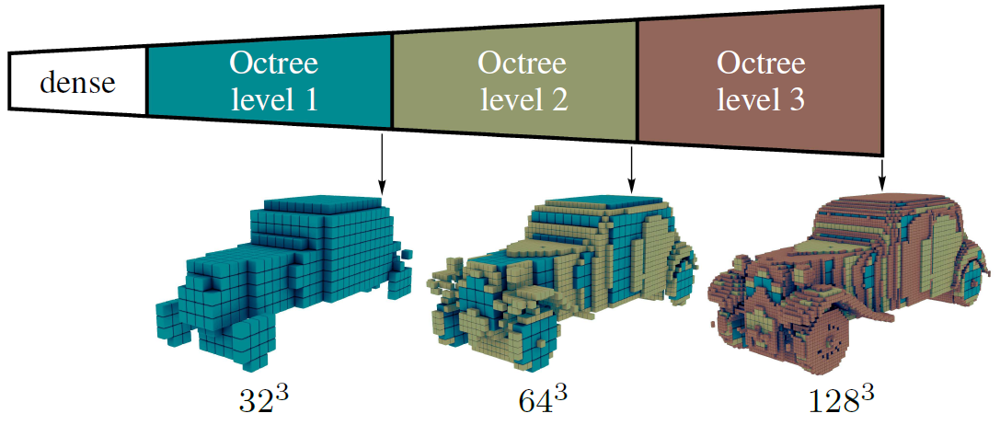
最左边的“dense block”由普通的3D卷积层组成，输出$d_1 \times d_2 \times d_3 \times c$大小的4D tensor。
然后这个4D tensor被转换为键值对（index-value pairs）存储在hash table中，value就是一个voxel内的特征向量。
然后接下来的octree block就会预测octree新生成的结构、和相应生成的内容（特征向量）。
多次通过octree block处理就会生成高精度的体素表示。
实现
Octree编码法
作用：将体素空间用octree表示，那么对voxel grid的操作就可以转换为对octree的操作
基于哈希表的Octree编码（可以实现常数时间的元素获取）：
Octree cell的空间坐标$\mathtt{x}=(x,y,z)$，其在树中的层级（分辨率等级）为$l$，其内容为$v$。
将其转换为索引$m=\mathcal{Z}(\mathtt{x},l)$，其中$\mathcal{Z}(\cdot)$是Z-order curve。
那么就形成了键值对$(m,v)$。于是八叉树就是$O=\{(m,v)\}$
那么数据操作和更新都在hash table中进行。
查值函数（从八叉树$O$中获取值）：
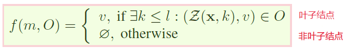
Octree Generating Networks
binary occupancy values $v=\{0,1\}$
由普通3D卷积生成$d_1 \times d_2 \times d_3 \times c$大小的4D tensor，然后被转换成octree，并将数据存储在hash table中。
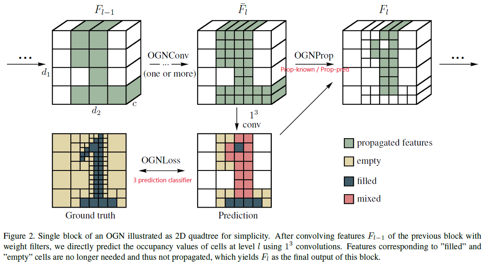
图中为了示意的简便起见，用2D voxel替代3D voxel来展示。
propagated features是指需要处理或细分的网格特征
empty是指不是实体的网格
filled是指被占据、是实体的网格
mixed是指需要细分的网格（与GT相比既有empty又有filled）
OGN-Conv
OGN-Conv需要处理由哈希表表示的特征图。OGN-Conv支持步长卷积和上采样卷积。
基本原理（类似于“im2col”和“col2im”函数）：将hash table转变为feature matrix，然后与权重矩阵相乘，再复原回hash table
OGN-Loss
predictions就是判断voxel是empty/filled/mixed中的哪种，是3分类问题。用$1^3$卷积和softmax实现即可。
最小化predictions与the cell state of the ground truth的交叉熵：
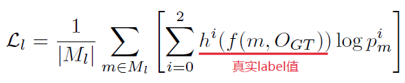
$p_m^i$是输出概率值，$M_l$是第$l$层的叶子集合。那么总目标函数就是全部层的$\mathcal{L_l}$的求和。
OGN-Prop
将预测出来是“mixed”的取出来作为输出。可能还要取出一些其他的邻居，以便用于接下来的卷积计算。
根据在测试阶段是否知道Octree的GT，传播方式分为：Prop-Known方法（例如语义分割，结构不变，只需要与GT做对比即可）和Prop-Pred方法（例如三维重建，结构需要你预测，需要训练分类模型来判断每个voxel是empty/filled/mixed中的哪种）。不详述。
MarrNet
NIPS2017《MarrNet: 3D Shape Reconstruction via 2.5D Sketches》
paper下载：http://papers.nips.cc/paper/6657-marrnet-3d-shape-reconstruction-via-25d-sketches
概述
从单张图片重构出3D voxel-based reconstruction。从RGB图得到2.5D表示，再转换成3D形状（two-step）。MarrNet可以在synthetic data数据上训练然后在real data上进行self-supervised的fine-tune（一定程度上解决了domain adaptation问题）。MarrNet是end-to-end的可训练模型，达到了SOTA。
2D → 2.5D → 3D的优点：
- First, compared to full 3D shape, 2.5D sketches are much easier to be recovered from a 2D image; models that recover 2.5D sketches are also more likely to transfer from synthetic to real data.
- Second, for 3D reconstruction from 2.5D sketches, systems can learn purely from synthetic data.
- Third, we derive differentiable projective functions from 3D shape to 2.5D sketches; the framework is therefore end-to-end trainable on real images, requiring no human annotations
注：
- 取名MarrNet是因为与David Marr’s theory of perception相近
- intrinsic images（描述物体内在固有属性的可分离的本质图像）：例如depth、surface normals、silhouette等等
- Reprojection Consistency只在fine-tune中使用；预训练使用与GT voxel gird比较的交叉熵。
- 本文定性分析（图片展示）比较多，定量分析比较少（只有人类肉眼比较结果和一个IoU结论）
- 我感觉本文的ablation study说服力不足，即不能说明fine-tune是有效的，并不能说明Reprojection Consistency的设计是起到实际作用的。详见实验的第二部分。
原理
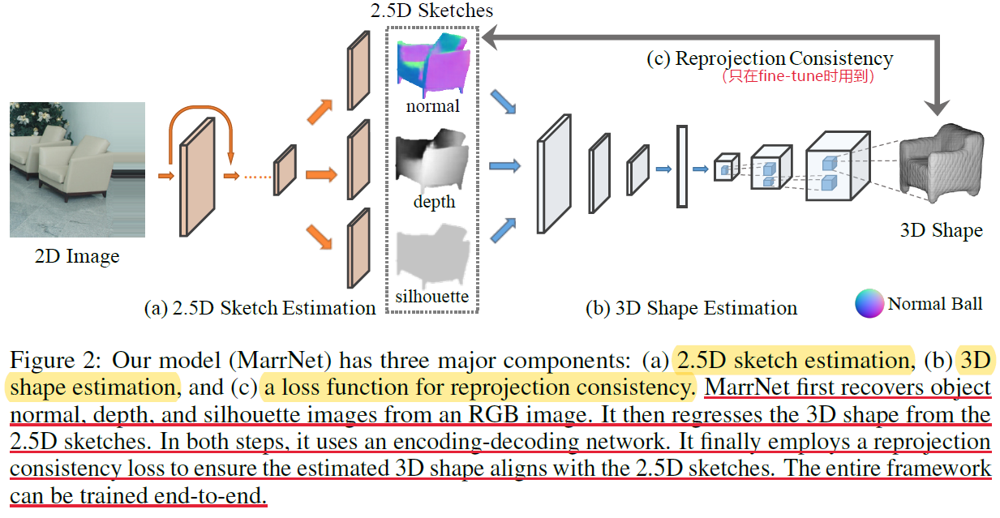
用2D CNN的方法生成2.5D图，然后将2.5D图用encoder-decoder方法生成体素表示。用reprojection consistency loss确保3D与2.5D匹配。
实现
2.5D Sketch Estimation
用encoder-decoder结构生成2.5D表示。用ResNet-18编码，将256x256的RGB转变为8x8x256的特征图。然后用decoder恢复成256x256的depth, surface normal, and silhouette images
3D Shape Estimation
用encoder-decoder结构生成3D体素。输入depth和normal图（施加以silhouette images掩膜），然后用卷积转变为200维向量，然后用3D卷积生成128x128x128的体素表示。
Reprojection Consistency
使得3D表示与2.5D表示相一致，即将2.5D投射到3D空间中，体素也需要具有与2.5D的描述相一致的性质。reprojection consistency loss分为depth reprojection loss和surface normal reprojection loss。并且reprojection consistency loss对voxel可求导，使得可以用反向传播计算和优化。
记3D voxel grid在$(x,y,z)$处存在该voxel的概率为$v_{x,y,z}\in[0,1]$，深度图在$(x,y)$处的值为$d_{x,y}$，法向图在$(x,y)$处的法向为$n_{x,y}=(n_a,n_b,n_c)$。并且假设是正交投影（注意这里不是相机成像的投影模型）
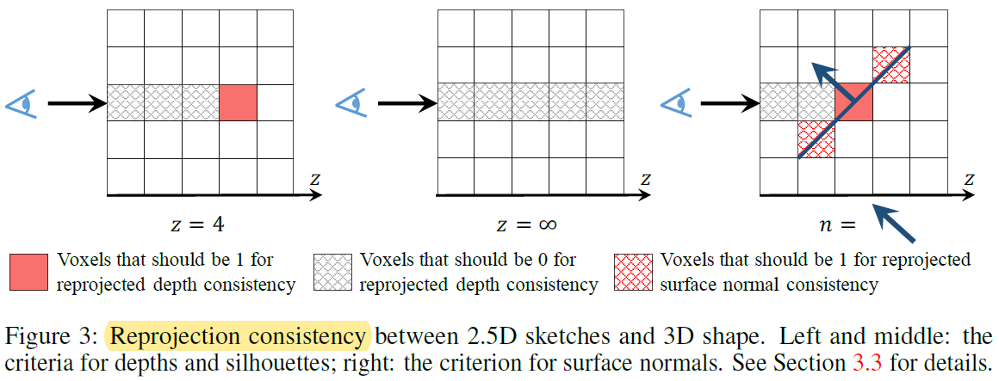
depth reprojection loss的目标是：将depth image的point投影到3D中，使得这个3D point恰好出现在3D voxel reconstruction中，并且该点的视线前方无遮挡。
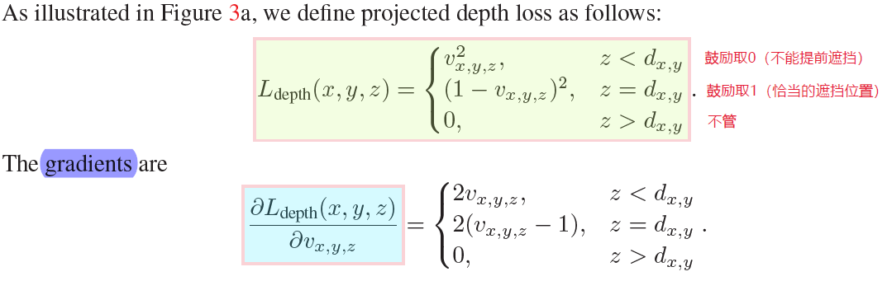
surface normal reprojection的目标是：使得该点在3D切平面上的邻居存在
已知法向$n_{x,y}=(n_a,b_b,n_c)$必定与$n_x’=(0,-1,n_b/n_c)$、$n_y’=(-1,0,n_a/n_c)$垂直。那么voxel在$(x,y,z)\pm n_x’$和$(x,y,z)\pm n_y’$的值必定为1（当这些点在silhouette image以内时才算）。
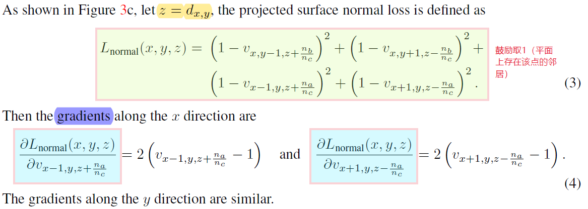
Training paradigm
将“2.5D sketch estimation”和“3D shape estimation”分别在synthetic images上预训练：The 3D interpreter is trained using ground truth voxels and a cross-entropy loss（注意预训练是用与GT比较的交叉熵！）
然后再在真实图片上fine-tune：The reprojection consistency loss is used to fine-tune the 3D estimation component of our model on real images, using the predicted normal, depth, and silhouette。固定decoder of the 3D estimator（因为它包含了3D形状的先验，不希望改变），只fine-tune the encoder（学习映射到decoder合理的特征空间中）。这种fine-tune类似自监督，可以在无任何标注的单张测试图片上进行fine-tune。
实验
3D Reconstruction on ShapeNet
生成的形状具有smoother surfaces and finer details
Our full model achieves a higher IoU (0.57) than the direct prediction baseline (0.52).
direct prediction baseline：不经过2.5D表示，直接基于3D卷积的体素生成
3D Reconstruction on Pascal 3D+
现在ShapeNet上预训练，然后fine-tune them on the PASCAL 3D+ dataset
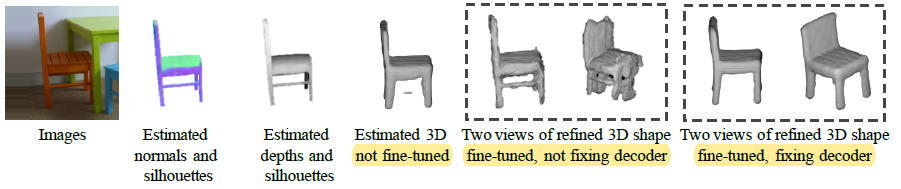
上图的ablation study表明，需要固定decoder of the 3D estimator进行fine-tune才能取得更好的fine-tune效果。
但感觉本文的ablation study说服力不足，文中说The model trained on synthetic data provides a reasonable shape estimate和Our final model, fine-tuned with the decoder fixed, keeps the shape prior and provides more details of the shape，这只是作者自己的观点，并没有数据支撑，并且“human studies”中并没有fine-tune前后的“preferences”对比，并不能说明fine-tune是有效的，即并不能说明Reprojection Consistency的设计是有作用的。
作者认为IoU指标不好，不能描述精细结构等，提出“human studies”，即人类肉眼比较MarrNet和竞争对手DRC哪个效果比较好。效果当然是说MarrNet比较好啦。
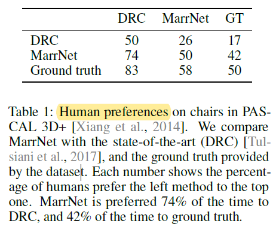
MarrNet不能复原复杂的、细弱的结构，而且silhouette mask不能精确估计。
3D Reconstruction on IKEA
IKEA furniture数据集，our model can deal with mild occlusions in real life scenarios
Extensions
We further train MarrNet jointly on all three object categories, and our model successfully recovers shapes of different categories
LSM
NIPS2017《Learning a Multi-View Stereo Machine》
paper下载：http://papers.nips.cc/paper/6640-learning-a-multi-view-stereo-machine
概述
利用n幅图像（n≥1）以及这些摄像机的内外参（camera poses），求出物体的体素重建（Voxel LSM）或相应的n幅深度图（Depth LSM）。LSM端到端可微分。核心思想：利用投射关系将2D排列的特征与3D排列的特征相互转换，且能此过程可微分，使其利用了空间投影关系的几何先验。
注：
- 多视角立体视觉（Multi-view stereopsis，简称MVS）：给定物体的多幅图像、这些图像所分别拍摄的摄像机的姿态（内参和外参），试求物体的几何表示（3D结构/深度图等）
- LSM == Learnt Stereo Machine
- our system is able to better use camera pose information leading to significantly large improvements while adding more views（然而对比的网路（3D-R2N2）是add pose information in a fully connected manner，并没有专门对此设计过）
- 可能作者调参和优化了很久。。。
TODO IDEA：将几何投影等关系编码且使得可微分，使得可以反向传播。
实现
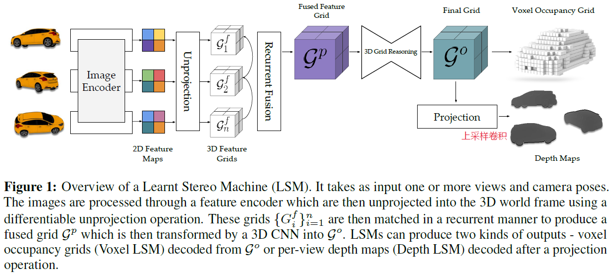
简述：输入n幅图像，然后经过2D CNN特征提取出2D的特征图。再分别使用“unprojection”操作得到3D排列的体特征$\mathcal{G}^f_i$。然后使用RNN将其全部整合成一个体特征$\mathcal{G}^p$。再将其用3D卷积得到$\mathcal{G}^o$。如果想得到体素表示，则直接使用3D卷积生成即可；如果想得到相应的深度图，则使用“projection”操作转换为2D特征图之后再使用2D卷积上采样即可。
2D Image Encoder
用UNet生成特征图。从图像$\{I_i\}^n_{i=1}$转变为特征图$\{\mathcal{F}_i\}^n_{i=1}$
Differentiable Unprojection
输入特征图和相机姿态，输出3D排列的特征。
即从特征图$\{\mathcal{F}_i\}^n_{i=1}$转变为3D gird$\{\mathcal{G}_i^f\}^n_{i=1}$
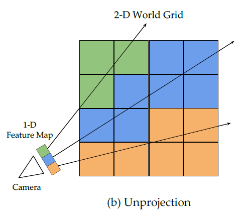
上图只是方便图示而已，实际上是3D gird和2D feature map。
实际实现过程：将3D gird center投影到image plane得到连续的坐标，然后根据discrete grid的feature value用bilinear sampling插值得到该3D gird的feature
为了可以支持单张图片输入，我们还往每个3D gird中添加几何特征（例如depth value和ray direction）
这个过程是可微分的，使得可以端到端训练。
Recurrent Grid Fusion
从多个3D gird$\{\mathcal{G}_i^f\}^n_{i=1}$到单个$\mathcal{G^p} $
使用3D convolutional variant of the Gated Recurrent Unit (GRU)，类似于3D-R2N2中的做法。
训练时随机打乱输入的顺序，减小输入顺序带来的影响。
3D Grid Reasoning
将$\mathcal{G^p} $转变为$\mathcal{G^o} $
使用3D UNet。目的（感觉乱说。。）：use shape cues present in $\mathcal{G^p} $ such as feature matches and silhouettes as well as build in shape priors like smoothness and symmetries and knowledge about object classes enabling it to produce complete shapes even when only partial information is visible
Differentiable Projection
从$\mathcal{G^o}$转变为多个2D feature map$\{\mathcal{O}_i\}^n_{i=1}$
输入：$\mathcal{G^o}$和相机姿态。输出：2D feature map$\mathcal{O}$
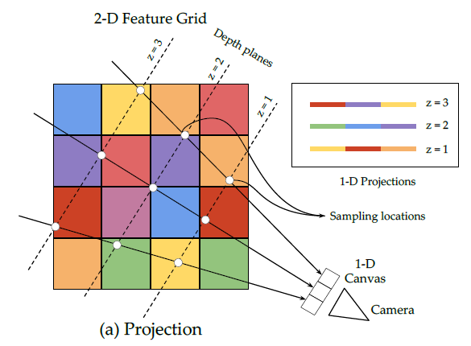
上图只是方便图示而已，实际上是3D gird和2D feature map。
实际实现过程：有多个平行于相机平面的等间距平面（图中的z=1,2,3平面），视线ray是穿过2D feature map的离散格点中心的。由此横穿经过的3D gird的特征值就作为特征值。在3D gird中是nearest neighbor interpolation而不是trilinear interpolation。详情见上图。
最后使用1x1的卷积可以减少channels的数量。
Architecture Details and Experiments
卷积均使用instance normalization和layer normalization
Voxel LSM (VLSM)：最后使用3D卷积上采样。softmax + binary cross entropy loss
Depth LSM (D-LSM)：使用Projection将$\mathcal{G^o}$转变为多个2D feature map$\{\mathcal{O}_i\}^n_{i=1}$，然后分别进行1x1卷积和deconvolution上采样，其中deconvolution有skip connections来自之前的image encoder。
Experiments性能：
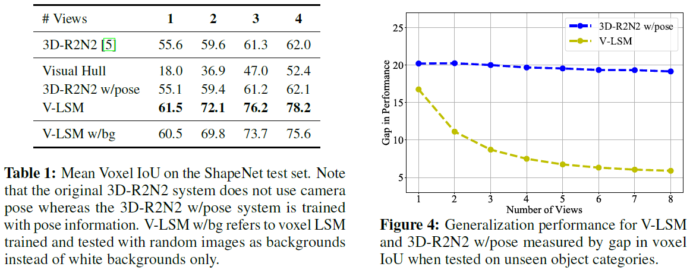
IM-NET 👍
CVPR2019《Learning Implicit Fields for Generative Shape Modeling》
概述
使用隐式场的方法来生成3D点云，后处理后的形成的mesh具有superior visual quality（higher surface quality）。并在插值时表现出良好的过度性质。所使用的implicit field decoder称作IM-NET，可以用于3D形状自编码（即shape representation learning）（IM-AE）、形状生成（IM-GAN）、形状插值、单视图3D重建等。其中encoder不属于本文设计范畴，只要能得到shape feature的都可以。
注：
- Our work is the first to introduce a deep network for learning implicit fields for generative shape modeling
- 缺点：训练时间长（因为the decoder needs to be applied on each point in the training set），或许可以考虑只生成物体表面的点来提高速度
TODO IDEA：后期可以考虑用decoder来生成其他的属性，例如颜色、纹理等。或许还可以用来做part segmentation
原理
decoder的关键是怎么根据shape feature得到出3D数据（点云）。这通过判断给定点$p$是处于shape的内部还是外部来实现的，那么中间的分界等值面就是shape的边界。
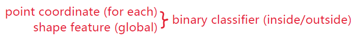
构造一个MLP，输入是shape feature和point coordinate，输出是判断内外部的二分类（sigmoid函数）。
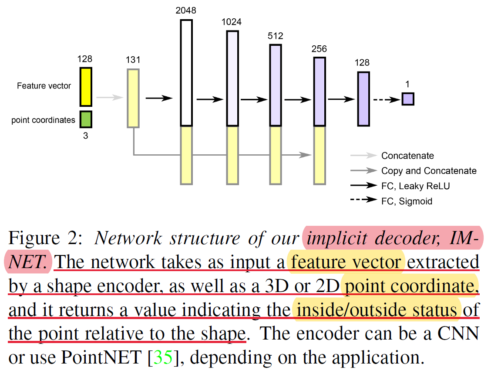
其中输入的point coordinate对空间的均匀采样得到的，因而输出形状的分辨率可以任意高。
The skip connections（copy and concatenate）可以使训练稳定、加快训练。
实现
用decoder $f_\theta(p)$为每个点$p$计算“是内部点的概率”（$f_\theta(p):[0,1]^3 \rightarrow [0,1]$），然后计算等值面（如3D形状则使用Marching Cubes方法，2D图像则使用applying thresholding方法），从而得到mesh表示。对于闭合形状，GT为$\mathcal{F}(p)$内部取1外部取0。
decoder训练方法（可采取的方法有两种）（作者的实现方式是一个decoder只对应一个物体种类）：
- A naive sampling：将训练形状的空间离散化（voxelize or rasterize），然后均匀采样。多分辨率采样依次得到$16^3,32^3,64^3,128^3$个点。先用低分辨率训练再逐渐用高分辨率训练（train the model progressively）。大致是立方复杂度。
- A more efficient approach：采样更多的靠近表面的点，对离表面比较远的点不采样。然后对采样的每个点都有个权重$w_p$，是该点采样密度的倒数，用以补偿采样密度的变化。大致是平方复杂度。
损失函数（$S$是采样得到的点集）：
IM-NET的应用举例
Auto-Encoding：使用3D卷积从$64^3$的voxels中提取128维特征，然后decoder使用IM-NET。使用progressive training。
3D shape generation：使用autoencoder中训练好的encoder的输出作为latent-GAN的输入
single-view 3D reconstruction（SVR）：用ResNet将$128\times128$的图像编码成128维的特征向量。使用autoencoder中训练好的decoder，固定其参数不变，只训练ResNet的参数（encoder）去最小化mean squared loss
实验
获取point cloud之后，转换为mesh（如Marching Cubes方法），最后用Poisson-disk Sampling获取10000个表面的点。
作者觉得chamfer distance（CD）、mean squared error（MSE）、IoU并不能很好的描述物体表面的视觉性质（例如桌子面发生一点点上下的移动将剧烈地改变IoU的值，但是视觉上的效果却差不多；并且IoU指标并不抵制表面的凹凸起伏），提出使用计算机图形领域的light field descriptor（LFD）指标。以及coverage score（COV-LFD）、Minimum Matching Distance（MMD-LFD）指标。
插值效果
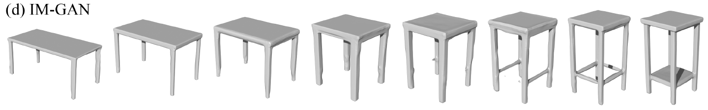
优点：cleaner surface boundaries、smooth part movements、handles topology changes
但是不知道如何控制这种变化的过程
DISN 👍
NIPS2019《DISN: Deep Implicit Surface Network for High-quality Single-view 3D Reconstruction》
paper下载：https://arxiv.org/abs/1905.10711
概述
提出了一种单视图重建的网络，能生成高质量的3D形状。核心是预测“signed distance field”。不仅结合了“global image features”，还结合了“local features from the patch”，因而能够生成更多细节的高质量3D形状（例如细小结构、孔洞）。在单视图重建方面达到了SOTA。但是只能用于图片背景干净的输入。
注：
- Signed Distance Functions（SDF）是属于隐式的surface表示；传统的方法是显式的surface表示（例如mesh）
- DISN == Deep Implicit Surface Network
- 原始生成的3D形状是点云，然后用Marching Cubes方法来确定iso-surface（以获得3D mesh）
- 缺点：要生成很多3D points才能确定等值面（最后需要从dense 3D grid中采样格点作为输入）。
- 优点：生成的分辨率可以任意高
- 还可以扩展到multi-view reconstruction和shape interpolation应用中
- 实现细粒度可能的原因是Local Feature是从images中的对应区域抠特征子图实现的。Local Feature预测出来的SDF值可以认为是总的SDF值的残差，残差对应“细粒度/细节”。
TODO IDEA：
- IDEA1：生成空间分布，然后在分布中采样得到物体表面的点。
- IDEA2：使用无符号的Distance Functions（记作$f(p)$），然后随机初始化一个3维空间点$p\in \mathbb{R}^3$，通过求解优化问题$min_{p} \frac{\partial f(p)}{\partial p}$，满足此问题的解$p$组成的一系列的点集就是物体的表面。相当于用导数来引导point在surface上的移动。这样理想情况下只需要初始化一个随机点就能使得该点遍历整个surface了（👍）
- IDEA3：能否借鉴U-Net的思想生成高分辨率的细粒度SDF？
原理
Signed Distance Functions（SDF）描述了空间某点到物体表面的有符号距离。
在物体外部则为正号，内部则为符号，在物体表面则为零。绝对值是到表面的距离。
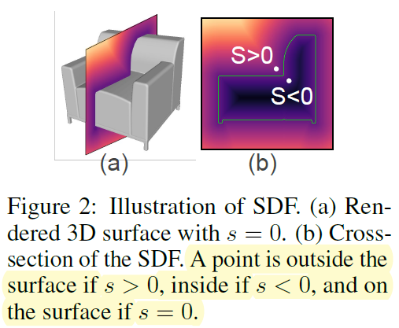
然后采样很多个点，通过预测SDF的值，再用寻找等值面的方法来求得表面。
实现
首先估计相机姿态，目的是把3D点投射到2D plane上，用以确定2D feature map上local patch的位置。然后将point-wise feature、local feature、global feature联合起来推断SDF的值。
最后采样dense 3D grid，为每个格点预测SDF值，然后用Marching Cubes获取3D mesh。
Local Feature是从images中的对应区域提取的，point-wise feature直接就是MLP处理点坐标，global feature直接就是CNN处理整张图像。
整体结构（图中的“+”号是加法，作者实验表明两路的推断（两个decoder）比一路的推断（只使用一个decoder）效果要好）：
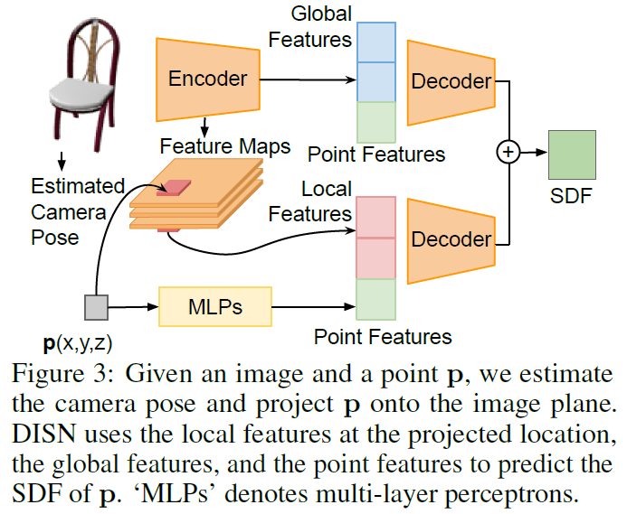
Camera Pose Estimation
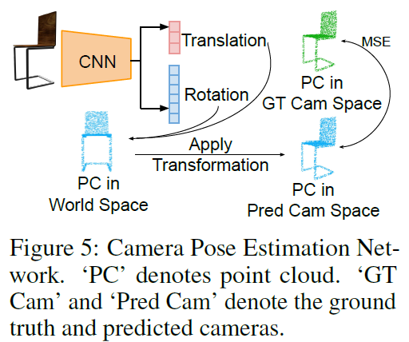
将输入图片用CNN推断出位移量$t$（Translation）和6D旋转表示$b$（Rotation）。由$b$可以用公式计算出旋转矩阵$R$，那么点$p$的空间变换就是$Rp+t$。对aligned model space（即world space）施加空间变换得到“预测的变换点云”，再与GT比较就可以计算出Loss。
Loss的计算方法如下（本质是mean squared error，$PC_w$代表world space中的点云，$p_G$代表camera space中的GT）：
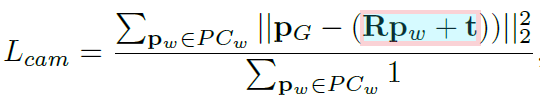
SDF Prediction
Point-wise feature：目的是将位置向量映射到更高维的空间中去（即图中的“Point feature”）
Global feature：利用CNN推断全局的特征向量
Local Feature：利用估计出来的相机参数将3D点$p$投射到2D image plane的点$q$去，然后将相应位置上的特征子图抠出来再concat，由此得到local feature。（因为特征图尺寸不一样，所以先用双线性插值再抠图）
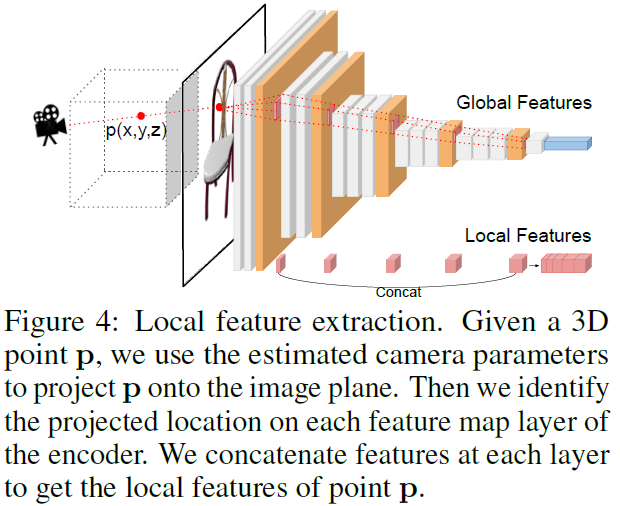
那么SDF的结果就是两个decoder输出结果的和。可以认为是下面这个decoder分支是一种“residual SDF”，即一种残差预测结构。
Loss Functions：使用加权的损失函数，含义是使得更看重GT表面附近的SDF估计误差（其中$m_1>m_2$）
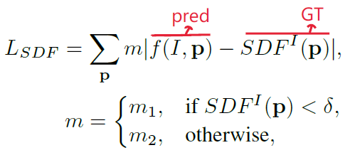
实验
使用ShapeNet，并且train a single network on all categories，使用VGG-16作为CNN的提取特征。以CD、EMD、IoU作为指标。与多种模型（如AtlasNet, Pixel2Mesh, 3DN, OccNet and IMNET）进行比较，取得较好的性能。详情略。
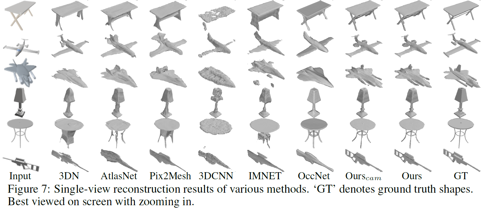
Neural Renderer
CVPR2018《Neural 3D Mesh Renderer》
paper下载：http://openaccess.thecvf.com/content_cvpr_2018/html/Kato_Neural_3D_Mesh_CVPR_2018_paper.html
概述
将Renderer的渲染过程近似可微化，使得渲染器（Renderer）可以嵌入到神经网络结构中来。渲染的对象是3D mesh，生成2D图像。由此作者根据Neural Renderer提出了两种应用：single-image 3D mesh reconstruction with silhouette image supervision和gradient-based 3D mesh editing with 2D supervision（such as 2D-to-3D style transfer and 3D DeepDream），展现了将Renderer集成到神经网络中的巨大威力
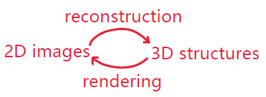
难点：如何将rasterization的过程可微分
注：
polygon mesh的优点：compactness（容易表示、参数少）、geometric properties（suitability for geometric transformations. The rotation, translation, and scaling of objects are represented by simple operations on the vertices.）
渲染过程：Rendering consists of projecting the vertices of a mesh onto the screen coordinate system, and generating an image through regular grid sampling。后者的过程（rasterization）是离散的、不可微分的，需要我们近似梯度，从而实现反向传播算法
Our proposed renderer can flow gradients into texture, lighting, and cameras as well as object shapes.（mesh + texture + lighting + … = 2D rendered image）
Polygon mesh表示法：3D顶点$\{v_i^o\}$和面${f_j}$（其中$f_j$是3维向量，内容是三角形面的顶点的索引）
2D-to-3D style transfer：
风格迁移：将content mesh的“content”和style image的“style”融合到输出的output mesh上。需要用content loss衡量content的迁移损失、style loss衡量style的迁移损失
$Mesh \rightarrow Image$提供了对顶点和面纹理的梯度流，因此可以修改面纹理，将风格迁移到面纹理上。Renderer使得一些对图像地操作（例如风格迁移）迁移到3D数据结构中成为可能。
实现
Rendering pipeline and its derivative
将3D顶点$\{v_i^o\}$投射到2D平面上得到$\{v_i^s\} $，此过程是可微分的
然后将$\{v_i^s\} $和$\{f_j\}$通过rasterization得到2D rendered image：考虑2D rendered image上的一个pixel点$P_j$（其颜色值$I_j$），如果这个pixel的center位于face $f_i$的内部，则此pixel的颜色值$I_j $被赋值（染色）成$I_{ij}$
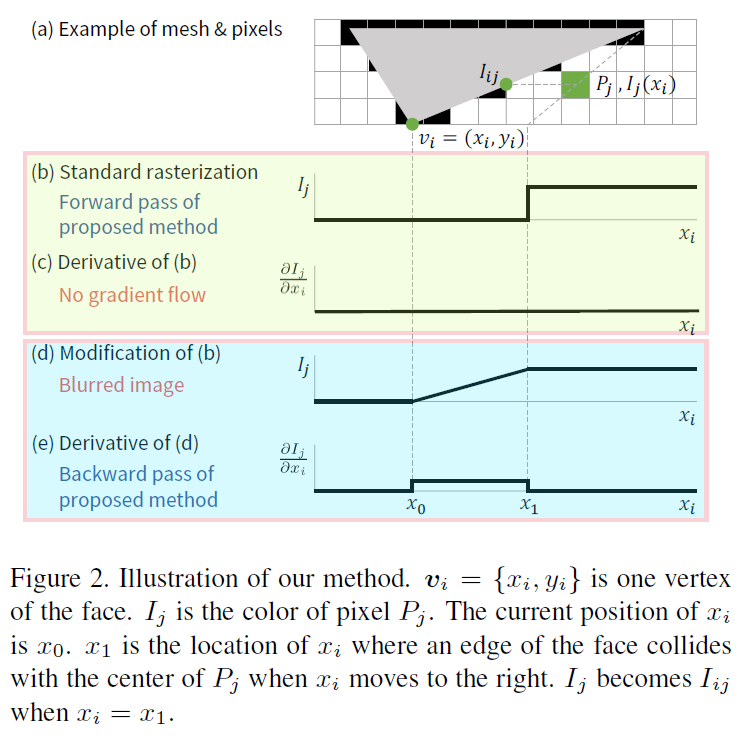
图中只考虑$x_i$是可变的，其他暂时冻结住不考虑其变化
我们将突变的过程连续化（线性插值），得到“（d）”所示的效果。我们前向传播使用图“（b）”所示的曲线，反向传播的导数使用“（e）”所示的曲线。
其中颜色突变量$\delta_j^I=I(x_1)-I(x_0)$，位移变化量$\delta_j^x=x_1-x_0$，那么斜线的斜率就是$\frac{\delta_j^I}{\delta_j^x}$
考虑反向传播的误差信号$\delta_j^p = \frac{\partial Loss}{\partial I_j}$，当$\delta_j^p>0$时$I_j$会减少，当$\delta_j^I>0$时$I_j$会增大。为了不使得做无用功，我们要求$\delta_j^I \delta_j^p < 0$才可以更新参数，所以：
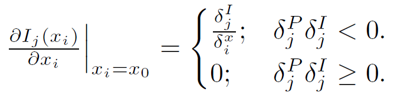
类似地，当像素点本身就在face的内部时，则如下图所示：
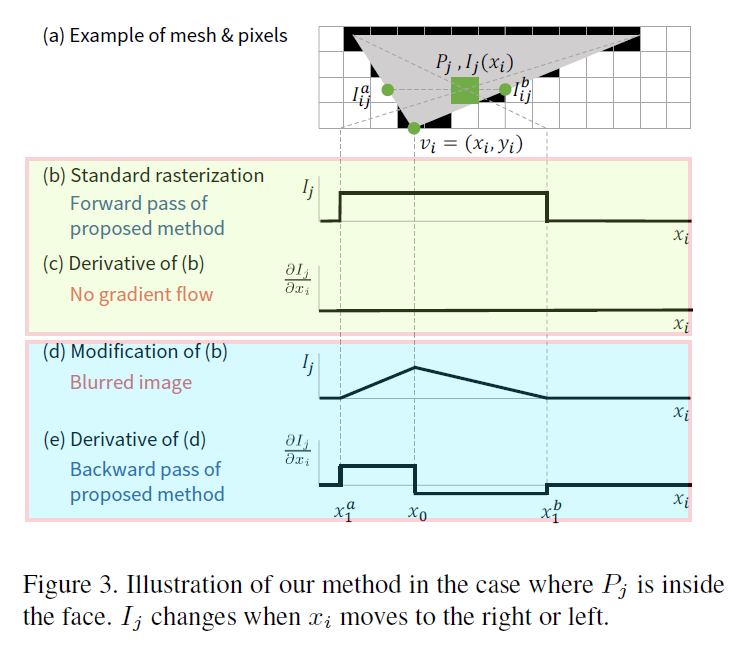
并且其导数如下所示：
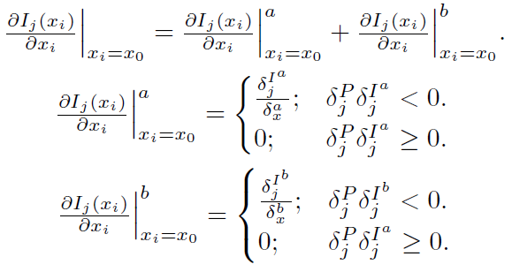
当多个faces时，our rasterizer draws only the frontmost face at each pixel, and do not flow gradients if they are occluded by surfaces not including $v_i$
Texture：位于face$\{v_1,v_2,v_3\}$上的点$p$可以被分解为$p=w_1v_1+w_2v_2+w_3v_3$，那么用$(w_1,w_2,w_3)$就可以表示出face$\{v_1,v_2,v_3\}$上的点。其纹理texture就可以利用$(w_1,w_2,w_3)$从 texture image$s_t\times s_t \times s_t$（each face has its own texture image）中查值获得。不难验证必定满足$w_1 + w_2 + w_3 = 1$
Lighting：考虑环境光$l^a$和定向光源$l^d$，那么pixel color$ I_j $经过光源渲染后的颜色就是$I^l_j = (l^a+(n^d\cdot n^j)l^d)I_j$（$n^j$是face上pixel的单位法向，$n^d$是定向光源的单位方向）
Single image 3D reconstruction
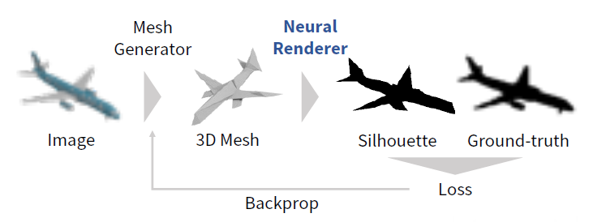
思想：match the ground truth silhouettes。有点像encoder-decoder结构
3D generator idea：deform an isotropic sphere with 642 vertices to generate a new mesh, therefore the mesh we use is specified by 642*3 parameters。然后使用silhouette loss（鼓励IoU越大越好）和smoothness loss（鼓励面面夹角越接近180°越好）训练此generation function
将mask作为附加通道加入到RGB图中
Gradient-based 3D mesh editing
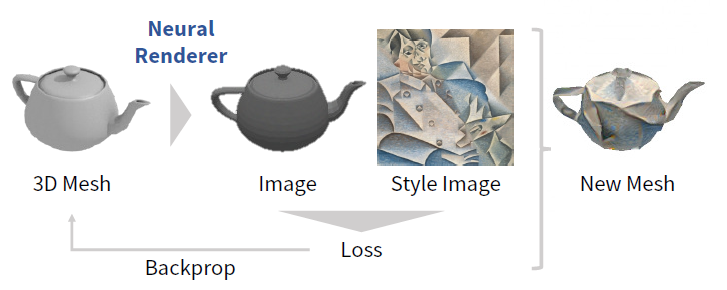
We optimize a 3D mesh consisting of vertices, faces, and textures based on its rendered image
In this section, we propose a method to transfer the style of an image onto a mesh
其中content loss确保3D mseh的shape相同；style loss确保风格相同（图中的Loss指的是style loss）；同时使用了regularizer for noise reduction。总Loss就是所有loss的加权和，对顶点和纹理最小化loss的值
类似地，还可以用于3D DeepDream
Pixel2Mesh
ECCV2018《Pixel2Mesh: Generating 3D Mesh Models from Single RGB Images》
概括
提出了单视图输入的end-to-end框架，能生成三角形网格（triangular mesh）。使用GCN来处理mesh的顶点特征，将椭球形变来拟合表面，同时利用图像的特征。mesh从粗到精细化，顶点数变多。定义了4种loss来优化结果。结果具有更好的精细度，超越了SOTA。
注：
- 形变法的优点：deep network is better at predicting residual。a series of deformations can be added up together, which allows shape to be gradually refined in detail。it provides the chance to encode any prior knowledge to the initial mesh。
- 限制条件：只能用于亏格（genus）为零的shape，因为椭球没有“孔”
- 具有上采样层，点数逐渐增多。Deformation block则负责精细化mesh
原理
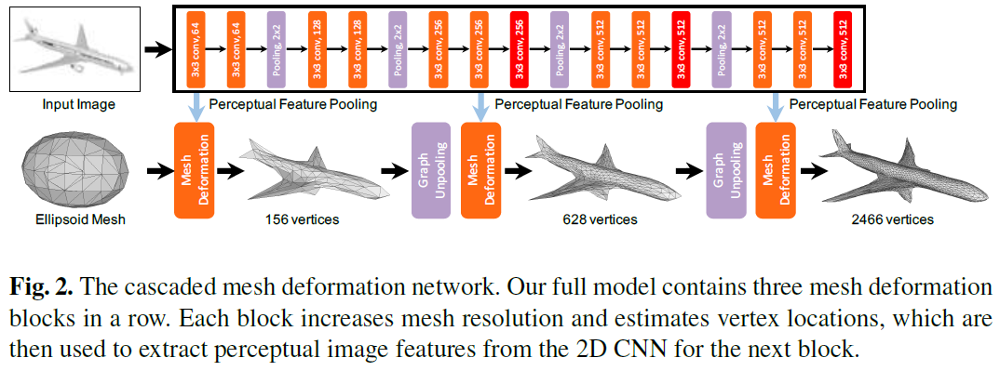
将mesh初始化为椭球，然后用GCN对vertex feature施加变换，从而实现对3D vertex point的位置空间变换。然后上采样graph，以增加点数。不断重复此过程，实现从粗到精的过渡。image feature融合进入deformation blocks中来实现全局shape的把握。
实现
整体由image feature network和cascaded mesh deformation network组成。
deformation blocks：将图像的2D特征提升到3D vertex的特征中来（1280维），然后cancat（1280+128=1408维），再GCN（输出空间坐标3维和特征128维）。
graph unpooling layers：上采样图，增加顶点数，从而可以实现更精细的结构
Initial ellipsoid
ellipsoid with average size placed at the common location
initial feature contains only the 3D coordinate of each vertex（3维。特征提取之后才是128维的feature）
GCN
将mesh用vertex和edge表示，那么就是一张graph。每个vertex上都有个feature。通过一次GCN层，得到变换后的特征：
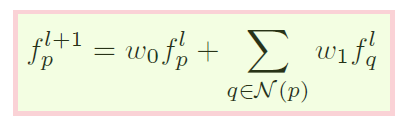
其中$w_0$和$w_1$都是$d_{l+1}\times d_{l} $尺寸的变换矩阵，即经过一层GCN层其特征向量的维度可能发生变化。我们的特征向量$f_p$是“3D空间坐标”、“局部形状特征”和“输入图像特征”的cancat。使用GCN将变换特征，等效于空间点位置的变换以及特征提取。
Mesh deformation block
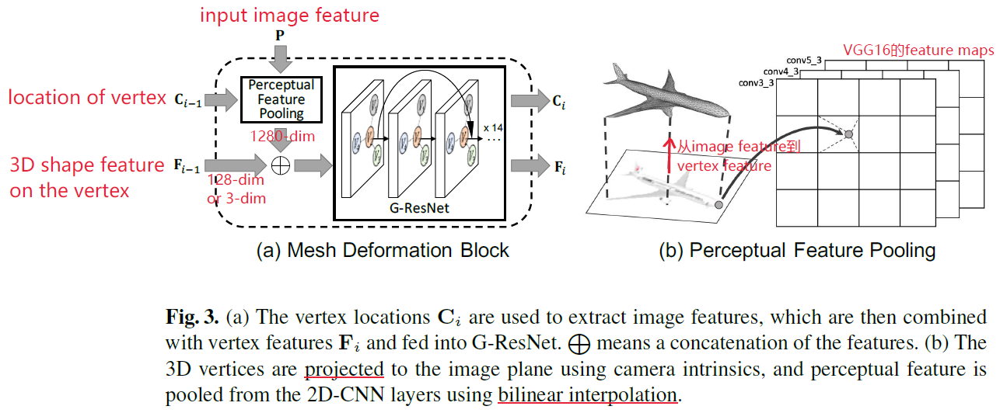
将“input image feature”提升到3D空间中的点特征，得到1280维的特征。与128维的形状特征concat得到1408维的特征，再进行GCN，其中一个分支预测点的3维坐标，另一个分支预测128维特征。
提升到3D空间：将3D点投射到2D平面上，然后根据图像中的gird feature进行双线性插值得到该点的特征。其中feature maps取自VGG16，一共有1280个通道，所以输出的特征是1280维。
残差结构的graph based ResNet（G-ResNet）有助于efficient exchange of the information between vertices、提升感受野。
所有的deformation blocks似乎是共用同一个VGG16的feature maps
Graph unpooling layer
目的：增加点的数量。使用图中Edge-based的方法。
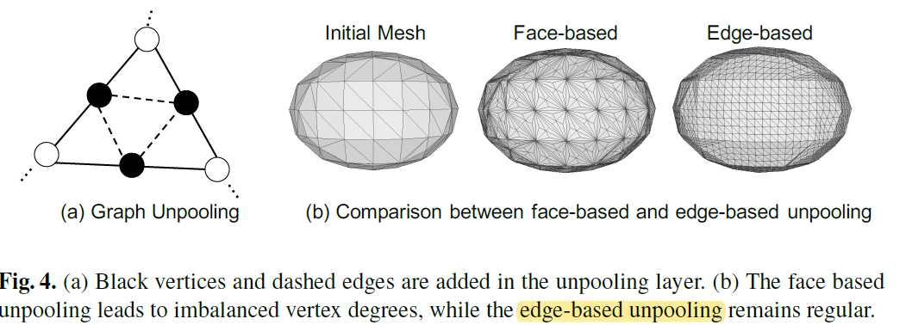
This edge-based unpooling uniformly upsamples the vertices, and doesn’t causes the imbalanced vertex degrees.
Losses and Regularizations
- Chamfer loss：It is reasonably good to regress the vertices close to its correct position, however is not sufficient to produce nice 3D mesh
- Normal loss：this loss requires the edge between a vertex with its neighbors to perpendicular to the observation from the ground truth. enforce the consistency of surface normal
- Laplacian regularization：prevent the vertices from moving too freely, which potentially avoids mesh self-intersection. encourages neighboring vertices to have the same movement. laplacian regularization to maintain relative location between neighboring vertices during deformation,
- Edge length regularization：edge length regularization to prevent outliers. 鼓励edge越短越好
- 总：就是上面4种的线性加权和
Pixel2Mesh++
ICCV2019《Pixel2Mesh++: Multi-View 3D Mesh Generation via Deformation》
paper下载：https://arxiv.org/abs/1908.01491
概括
从多视图输入、已知相机姿态的条件下重建出3D Mesh，是Pixel2Mesh的升级版。同样是利用GCN抽取顶点的特征、对初始mesh进行粗到细的形变。不同的是形变的过程为：对每个顶点分别提出形变的候选点，然后利用projection、GCN操作、结合图像的feature maps变换特征得到每个候选点的重要性系数，进行坐标的线性加权得到形变后的坐标。能够生成视觉效果好的Mesh，泛化能力强，达到SOTA。
注：
- Pixel2Mesh生成的mesh往往只在single-image的视角方向效果好，再其他视角下效果差
- 多视图输入的关键原理：使用诸如mean、std、max的统计特征，实现可以接受任意多视图的输入
- Pixel2Mesh++由perceptual network（VGG16）、coarse shape generation（Pixel2Mesh）和Multi-View Deformation Network（MDN）组成。
- MDN是end-to-end trainable的。可接受任意数量的视图输入
- 注意在MDN中没有上采样层，不能增加点的数量。
- 作者主要的贡献是设计了MDN，而MDN的作用更像是微调已生成的mesh
- 候选点（Hypothesis）本质上是对vertex周围环境的感知，GCN起到类似于local graph的neighborhood之间的特征交互融合、特征提取的作用。最后根据GCN得到的score来make movement decision。而Pixel2Mesh没有感知vertex周围环境的能力。
原理
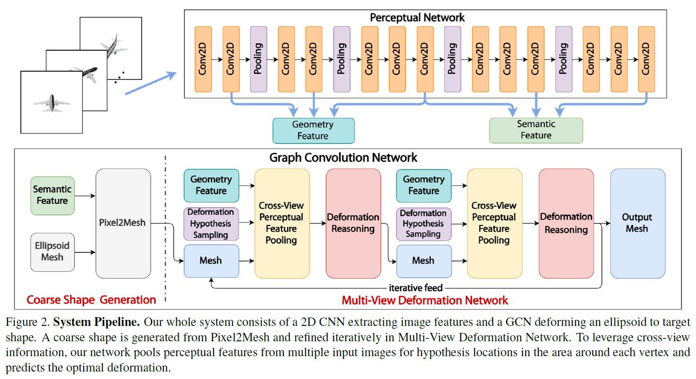
基于Pixel2Mesh做初始mesh的生成。从多视图中用VGG16抽取特征，底层级称作geometry feature，高层级称作semantic feature。然后为每个vertex生成形变候选点，利用图像抽取来的特征为每个候选点计算score，最后根据score和3D坐标作线性加权得到最终形变后的位置。多次形变即可得到输出的mesh。
实现
Deformation Hypothesis Sampling
目的：propose deformation hypotheses（形变候选点）for each vertex
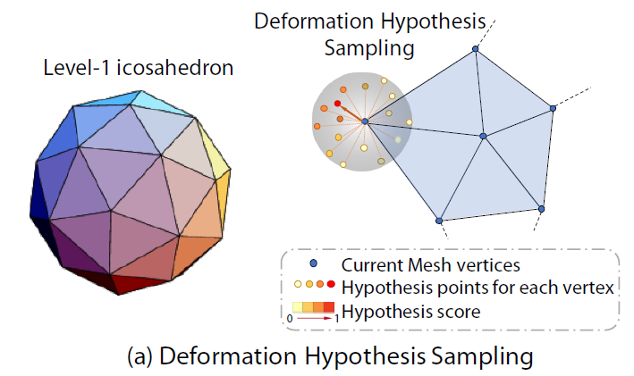
实现：在每个vertex的位置上放置一个level-1 icosahedron（具有42个顶点、80个面、120条边），然后为每个vertex构造一个local graph（local graph的边由“level-1 icosahedron”的120条边、vertex到“level-1 icosahedron”的顶点的连线组成。所以一个local graph一共有120+42=162条边，42+1=43个点）。每个顶点都要构造一个local graph，然后喂给接下来的“Cross-View Perceptual Feature Pooling”步骤
Cross-View Perceptual Feature Pooling
目的：assign each node（in the local graph）features from the multiple input color images
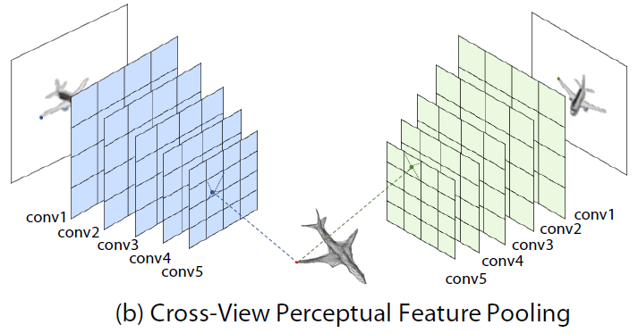
大体类似于Pixel2Mesh中的“perceptual feature pooling”操作。feature maps来自VGG16的conv1_2、conv2_2、conv3_3（它们是底层级的geometry feature），一个视图concat起来输出64+128+256=448长度的特征。
考虑到对不同数量的视图输入如果concat的话会得到不同长度的feature。我们改而使用统计特征，实现固定长度的输出。使用mean、max、std这三种统计特征。而且使用统计特征对视图的输入的顺序具有不变性。所以特征长度变为448*3=1344维。再把空间坐标concat进去得到1344+3=1347维度的特征。
Deformation Reasoning
目的：reason an optimal deformation for each vertex from the hypotheses using pooled cross-view perceptual features

实现：将local graph和local graph nodes feature（即pooled cross-view perceptual features）丢到scoring network（本质是GCN）中得到每个nodes的重要性得分$s_i$（softmax输出后自动满足$\sum_{i=1}^{43} s_i=1$）。若候选点的空间位置记作$h_i$（包括vertex，$i=1…43$），那么形变后的位置就是位置的线性加权：$\sum_{i=1}^{43}s_i h_i$。对每个顶点都运行一遍，就得到了最终形变后的结果。
Losses
损失函数照抄Pixel2Mesh的，但是唯一的区别是作者还extends the Chamfer distance loss to a resampled version，即：从mesh的face上均匀采样点，采样的点数正比于face的面积，由此可以额外采样出4000个点，加上2466个原本的mesh的顶点，总共6466个点，根据6466个点计算Chamfer distance loss
re-sample Chamfer loss的功能：helps to remove artifacts in the results，解决了points are not uniformly distributed on the surface的问题
Implementation Details
we use Pixel2Mesh to generate a coarse shape with 2466 vertices → 最终生成的点的数量就是2466个
实验
对比的网络：
- P2M-M：we directly run single-view Pixel2Mesh on each of the input image and fuse multiple results
- MVP2M：we replace the perceptual feature pooling to our cross-view version to enable Pixel2Mesh for the multi-view scenario
- LSM：Learnt Stereo Machine
- 3DR2N2：3D Recurrent Reconstruction Neural Network
性能：Our model significantly outperforms previous methods（based on F-score）
AtlasNet 👍
CVPR2018《A Papier-Mâché Approach to Learning 3D Surface Generation》
概述
提出使用基于流形中Charts和Atlases的概念的3Dshapes的surface生成方法。将surface表示成多个局部小表面的集合（类似于Charts的概念）。提高了精度、泛化强、能生成任意精度的分辨率。AtlasNet的本质是一个3D shape decoder（输入形状描述子输出mesh/pointcloud）。AtlasNet可以应用于形状自编码、3D重建等多个领域。
注：
- pointcloud的缺点：不能直接表示与邻居的关系（no surface connectivity），使得很难得到光滑、高保真的流形
- polygonal mesh的特点：对光滑流形的分块平面近似
- Surface parameterization： Establishing a connection between the surface of the 3D shape and a 2D domain
- 3D重建时输入的对象可以是pointcloud、images等，因为AtlasNet只要求特征向量作为输入，可以使用其他网络提取输入对象的特征向量之后作为AtlasNet的输入。
- chart：3D→2D（1个MLP函数）；atlas：a set of charts（多个MLPs）
- AtlasNet的功能：learn an atlas for 2-manifold $\mathcal{S}$
- 缺点：生成的mesh不闭合，有小孔，不同的曲面块之间有overlap
思想
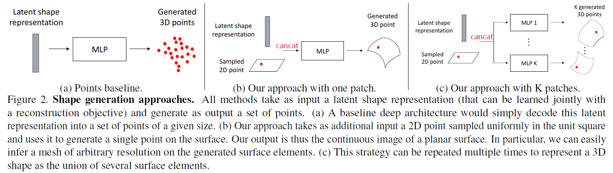
将2D单位正方形平面的点集（$[0,1]\times [0,1]$）使用MLP映射到3D曲面上。有多个MLP，于是就能得到多个小的3D曲面。多个小3D曲面就能组成物体。即，we seek to approximate the target surface locally by
mapping a set of squares to the surface of the 3D shape
这样1个MLP就能局部生成一个2-manifold（3D曲面）了
2D→3D：通过MLP得到
3D→2D：UV parameterization of the surface / 2D （UV） embedding to a plane
于是在2D平面上的性质就能迁移到3D曲面中：例如2D平面有纹理，则在3D曲面的对应点上也有相同的纹理
生成mesh的方法：将方形的2Dmesh映射到3D空间中，并保持点与点之间的连接关系
实现
Learning to decode a surface
目标：有一个形状描述子$\mathtt{x}$（形状特征向量），请据此生成the surface of the shape
实现：
- 有N个learnable parameterizations（MLP）$\phi_{\theta_i}$，$i\in\{1,…,N\}$，其中$\theta_{i}$是MLP参数
将$\mathtt{x}$和$(0,1)\times(0,1)$采样的点$(x,y)$进行cancat，再送到MLP中
损失函数：Chamfer loss。通过计算两个点集之间的Chamfer Distance来比较。
注意到MLP并没有明确禁止所编码的区域重叠（符合atlas的要求之一），并且最好覆盖整个shape（全覆盖才能使得Chamfer loss变小）
Implementation details
- auto-encoder中的encoder是PointNet；形状描述子的维度：1024；输入点云的点数：250~2500
- reconstruction中的encoder是ResNet-18；只训练encoder，而decoder则是autoencoder中的decoder（固定参数，不训练）
- decoder是4层的MLP：1024（ReLU）、512（ReLU）、256（ReLU）、128（tanh）。使用tanh的原因可能是点云经过单位球化了
- 输出点云的点数：2500
- 2D采样方法：网格规则采样
Mesh generation
有三种方法：
- Propagate the patch-grid edges to the 3D points：即transfer a regular mesh on the unit square to 3D，使得可以生成高分辨率的mesh，是一种自然的生成mesh的好方法（因为mesh的拓扑连接关系源自于2D grid的edge的连接方式）【AtlasNet专用，效果好】
- Generate a highly dense point cloud and use Poisson surface reconstruction（PSR）：生成很多点以及他们的normals，然后用PSR方法来得到mesh【Baseline专用，AtlasNet可用】
- Sample points on a closed surface rather than patches：从3D球面采样输入的点，而不是从多个2D单位正方形中采样。可以生成闭合图形，但是似乎只能用一个MLP。【AtlasNet专用，记作“1 sphere”】
实验
数据集：standard ShapeNet Core dataset
评价指标：Chamfer distance（CD，用于衡量pointcloud）和Metro（average Euclidean distance between the two meshes，用于衡量mesh）
Baseline/Oracle
- “Points baseline”：如上一幅图的（a）所示。直接输入1024维度的形状描述子，然后输出2500*3=7500维度，即2500个点（MLP层数为1024（ReLU）、512（ReLU）、256（ReLU）、7500（tanh））。最终输出的是pointcloud，所以没有“Metro”指标。
- “Pointsbaseline + normals”：输出空间指标和法向量，一个点是$\mathbb{R}^6$。然后根据切平面来增加点的数量（Augmentation）。然后使用PSR算法得到mesh。最终输出的是mesh。
- Oracle：从GT中随机采样点，然后计算CD和Metro的值。代表了模型所能达到的性能的上界（因为是由GT生成的）
3D reconstruction结果
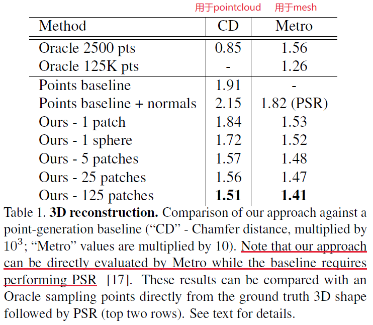
其他实验
Generalization across object categories：略
Singleview reconstruction：略
Shape interpolation
Finding shape correspondences：Notice that we get semantically meaningful correspondences, such as the chair back, seat, and legs without any supervision from the dataset on semantic information.
Mesh parameterization：our inferred atlas usually has relatively high texture distortion. But we can minimize distortion with off-theshelf geometric optimization, yielding small distortion.
Excess of distortion
Topological issues
Deformable shapes
Deep Marching Cubes
CVPR2018《Deep Marching Cubes: Learning Explicit Surface Representations》
paper下载：http://openaccess.thecvf.com/content_cvpr_2018/html/Liao_Deep_Marching_Cubes_CVPR_2018_paper.html
概述
提出了一种end-to-end的surface prediction方法。即“Differentiable Marching Cubes Layer”，使得可作为神经网络的最后一层来输出mesh。并且设计了loss函数使得可以在sparse point supervision上训练。并且能补全形状、分离物体的内外表面，即使在GT是稀疏和不完全的情况下。可以用于从点云中推断形状。可以与各种encoder、shape inference techniques结合使用。
特点：
- differentiable, end-to-end
- predicts explicit surface representations of arbitrary topology
- avoids the need for defining auxiliary losses or converting target meshes to implicit distance fields
- more accurate reconstructions while also handling noise and missing observations
- separating inside from outside even if the ground truth is sparse or not watertight
- easily integrating additional priors about the surface（e.g., smoothness）
- does not require explicit surface ground truth
注：
- 普通的marching cubes的输入是SDF，而deep marching cubes输入是$O$和$X$。所以网络的输出类型也要要求不同。
- 现有的3D surface prediction不能end-to-end训练，因为他们需要中间表示（例如TSDF），因而需要后处理（例如marching cubes算法）
- 普通的marching cubes算法不可微分
- 传统的表面重建方法：
- Voxel based method
- output: voxel occupancy / TSDF
- post-processing: Marching cubes
- Point based method
- output: points
- post-processing: Poisson surface reconstruction / SSD
- Voxel based method
- 传统方法的缺点：
- the ground truth of the implicit representation is often hard to obtain, e.g., in the presence of a noisy and incomplete point cloud or when the inside and outside of the object is unknown.
- these methods only optimize an auxiliary loss defined on an intermediate representation and require an additional postprocessing step for surface extraction. Thus they are unable to directly constrain the properties of the predicted surface.
实现
传统的Marching Cubes（非本文的方法）
分为两步：
- estimation of the topology：确定cell的拓扑类型（面的顶点位置不确定，只是知道拓扑概念上的位置）
- prediction of the vertex locations of the triangles：确定面的顶点的具体位置
记号：
- $D \in \mathbb{R}^{N\times N\times N}$为signed distance field。表示到surface的有向距离。内部为正，外部为负，表面为零。其元素记作$d_n$，其中$n=(i,j,k)\in \mathbb{N}^3$是索引
实现：
首先确定cell’s surface topology T。假设$D\in \mathbb{R}^{3\times 3\times 3}$，那么相当于这27个点分布在二阶魔方的各个角块的顶角上，它只是点。cell就是指二阶魔方的8个角块，它具有体积。然后根据d是否符号改变（穿过零）确定这个cell的拓扑类型。（只是确定了拓扑类型，图中蓝色面的顶点的具体位置并不知道，需要下一步来计算）
然后如果这个cell内部存在蓝色平面，就需要计算蓝色平面顶点的具体位置。使用线性插值得到。（如果是上图中的左上角的第一种类型，那就不用计算了，这种类型往往出现在物体的内部、或者是远离物体的外部）
Differentiable Marching Cubes
记号：
每个格点的伯努利分布参数：$O\in [0,1]^{N\times N\times N}$，$o_n\in[0,1]$
每个格点的面顶点的偏移量：$X\in [0,1]^{N\times N\times N\times3}$，$x_n\in [0,1]^3$
计算：
- 那么格点$n$处于状态$t\in \{0,1\}$（1代表被占据（红色表示），0代表不被占据（绿色表示））时的概率为$p_n(t)=(o_n)^t(1-o_n)^{1-t}$
- 那么grid cell n处于状态$T$时的概率为$p_n(T)=\prod_{m\in \{0,1\}^3}(o_{n+m})^{t_m}(1-o_{n+m})^{1-t_m}$。其中$2^8$种顶点的排列方式中只有140种是有效的拓扑形式。
- 那么entire grid的概率分布就是$p(\{T_n\})=\prod_{n\in\mathcal{T}}p_n(T_n)$。其中$\mathcal{T}=\{1,…,N-1\}^{3}$有$(N-1)^3$个cell
网络结构图：（输入点云，然后预测出$O$和$X$，从而预测出mesh）
Loss：（包含4项）
- Point to Mesh Loss：最小化observed 3D points到mesh平面的几何距离之和。作用：directly
measures the geometric error of the inferred mesh - Occupancy Loss：鼓励边界上不被占据，鼓励内部被占据
- Smoothness Loss：鼓励相邻格点的占据状态不变
- Curvature Loss：鼓励相邻cell的normal orientation的smooth transitions
DeepSDF 👍
CVPR2019《DeepSDF: Learning Continuous Signed Distance Functions for Shape Representation》
概述
DeepSDF能生成具有复杂拓扑结构的、高质量的、闭合的连续表面、可用于形状插值、形状补全。DeepSDF能够表示类别的形状（而传统的SDF方法只能表示一个物体的形状）。取得了SOTA。而且模型的大小缩小了。

本质：使用“coordinate + shape latent vector”作为输入，通过MLP后输出SDF值。训练时同时优化“shape vector”和“MLP parameters”（梯度下降优化，最后得到的shape vector就是训练集的shape vector）。推断“latent vector”时使用梯度下降不断迭代优化“latent vector”的初始值，从而得到符合observation的latent vector的值。
注：
- DeepSDF最有用的用途是Shape Completion（inference + feed-forward + marchingcubes）、Shape Interpolation（inference + interpolate + feed-forward + marchingcubes）
- SDF：有向距离函数：内部负数、外部正数、表面为零。
- “auto-decoder”可用于降噪、补全、错误检测
- 补全：只输入部分数据，然后生成latent vector（形状信息），再生成完整的shape prediction
- 最后还是要用marching cubes来生成等值面
- feed-forward耗时短；inference耗时长（对latent vector的优化速度慢，或许可以考虑替换掉ADAM优化器）
TODO IDEA：
- 或许可以用于生成动态的3D物体、或者是带有纹理材质的物体。
- 不同物体形状在latent vector分布中的位置不能指定。或许latent vector可以是类似one-hot的，一个变量代表一个物体种类，每个变量都服从高斯，然后只需要从高斯采样就能得到物体形状了。可能类似于Variational Auto-Decoder？
实现
通过学习一个“shape-conditioned classifier”，决策边界（最后一层是tanh）就是物体表面。
使用“auto-decoder”，接受latent vector和point coordinate作为输入，输出SDF值。
- training：已知observation（点坐标&SDF）来优化latent vector $z$和model parameters $\theta$
- inference：已知observation（点坐标&SDF）求latent vector $z$
- feed-forward：已知latent vector $z$和点坐标，求SDF
记号：
- coordinate $x$丢到模型里得到的SDF估计（latent vector为$z$）：$f_\theta(z,x)$
- 第i个形状的coordinate $x$处真实的SDF值：${SDF^i}(x)$
- 第i个形状的数据集（包含点坐标、真实的SDF值）：$X_i := \{(x_j,s_j):s_j=SDF^i(x_j)\}$
第一种方式是使用上图（a）所示的方法。但是一个模型只能对应一个物体。故我们不采用。
第二种方式是使用上图（b）所示的方法。一个模型可以对应一整类物体（例如各种小车）。我们采样这种方法。但是code未知，我们使用“auto-decoder”的学习方式来自动学习code的分布（注意这里的code不是人为指定的分布，例如不是one-hot）
训练（training）：我们首先初始化code为一个很小的值（例如$\mathcal{N}(0,0.01^2)$），然后根据已知的coordinate和SDF值来训练网络，反向传播时根据$\frac{\partial Loss}{\partial z_i}$和$\frac{\partial Loss}{\partial \theta}$分别更新Code $z_i$和Parameter $\theta$。

推断（inference）：根据已知的coordinate和SDF值，利用反向传播的$\frac{\partial Loss}{\partial z}$，更新优化Code $z$
前向传播（暂且称作feed-forward吧）：根据latent vector $z$和点坐标$x$得到预测的SDF值
注：
还可以计算得到surface normals：方法一和二（采用SDF的方法）都能通过计算$\frac{\partial f_\theta(x)}{\partial x}$来计算估计得到的表面法向（因为沿着法线方向SDF变化最快）
对于一个点的损失函数：$\mathcal{L}(f_\theta(x),s)=|clamp(f_\theta(x),\delta)-clamp(s,\delta)|$，以$f_\theta(x)$、$s$为x、y轴画图得（$\delta$越小越能描述表面的细节）：
“auto-decoder”是对“coded shape deepsdf”的训练方式。
为什么不用“encoder-decoder”结构：
传统的“encoder-decoder”结构的使用方法：
- 训练：“encoder-decoder”两部分一起训练
- 测试：丢掉训练好的encoder。在形状补全任务中，首先准备待补全的训练数据，然后重新训练另一个encoder。
作者认为训练“encoder-decoder”结构时，最后使用时只是用到了decoder，而没有用到训练完成的encoder，极大浪费了计算力。并且使用“encoder-decoder”进行形状补全时，训练新的encoder时的训练数据也要是“待补全”的数据集（这样才能从输入推断出latent vector）。
DeepSDF可以只输入部分的observation（例如depth map中点，只是部分的表面的点），然后推断出latent vector $z$的值，所以可以用于形状补全。
整个实现都是基于在物体对齐的条件下进行的（in a canonical pose）。否则同一个coordinate会因为不对齐（例如旋转）而会有不同的SDF值
实现
实施细节见前面的部分。下面是实验部分（使用ShapeNet）：
Representing Known 3D Shapes（represent training data）
用于测试latent vector和MLP是否能充分表示精细的结构。所使用的物体是在训练集内的。
实现过程：利用GT（在训练集中）的$X$（包含point coordinate和SDF）来inference得到这个物体所对应的latent vector的值；然后输入latent vector和密集网格采样的point coordinate，通过正向传播得到预测的SDF值，再用marching cubes来重建表面。
Representing Test 3D Shapes（use learned feature representation to reconstruct unseen shapes）
用于测试“得到latent vector的方法”是否能用于全新未见过的物体
实现过程：利用GT（不在训练集中）通过inference的方法得到latent vector；再正向传播、marching cubes得到表面。
Shape Completion（apply shape priors to complete partial shapes）
已知物体表面的一些部分（例如depth map只涉及一些表面），求整个物体的形状
实现过程：根据depth map可以知道位于surface上的点，然后估计surface normal。沿着surface normal的方向偏移$\pm \eta$的距离得到两个点（位于surface两侧且距离surface$\eta$的两个点），这样就得到SDF的样本数据。利用SDF样本数据先inference得到latent vector，再正向传播、marching cube就能得到mesh。
注：depth map的视角需要与物体对齐。作者还额外从“介于surface和camera之间的free-space”中随机采样一些点作为empty space points（或者称作free-space observations，且SDF值大于零），使得样本的点数增加，且不会在free-space中生成奇怪的形状。而且添加了“freespace loss”。
Latent Space Shape Interpolation（learn smooth and complete shape embedding space from which we can sample new shapes）
过程：利用training最后时得到的latent vector（或inference得到的都可以），将两个物体的latent vector线性插值再feed-forword得到中间状态的物体